EXP. 84/117 · BARCELONA, 1984
El anticuario de Via Laietana
El primer caso. Un despacho cerrado y cuatro sospechosos.
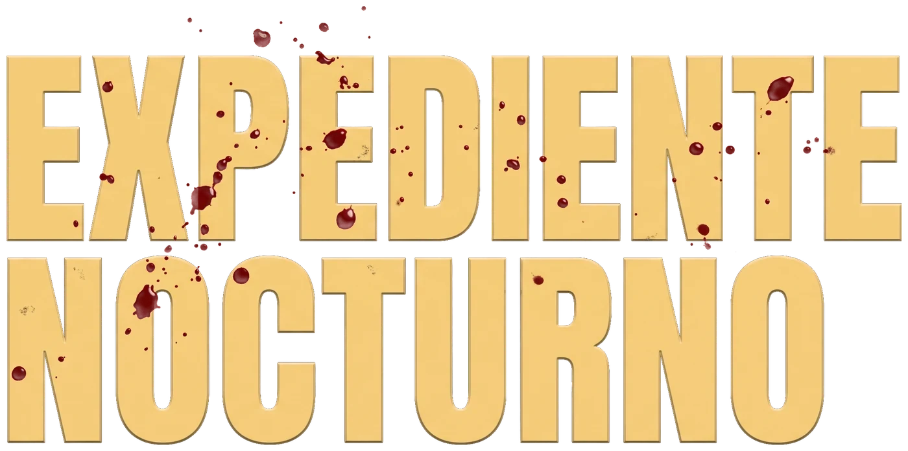
Son las tres de la madrugada. Antes del amanecer tienes que señalar a un culpable.
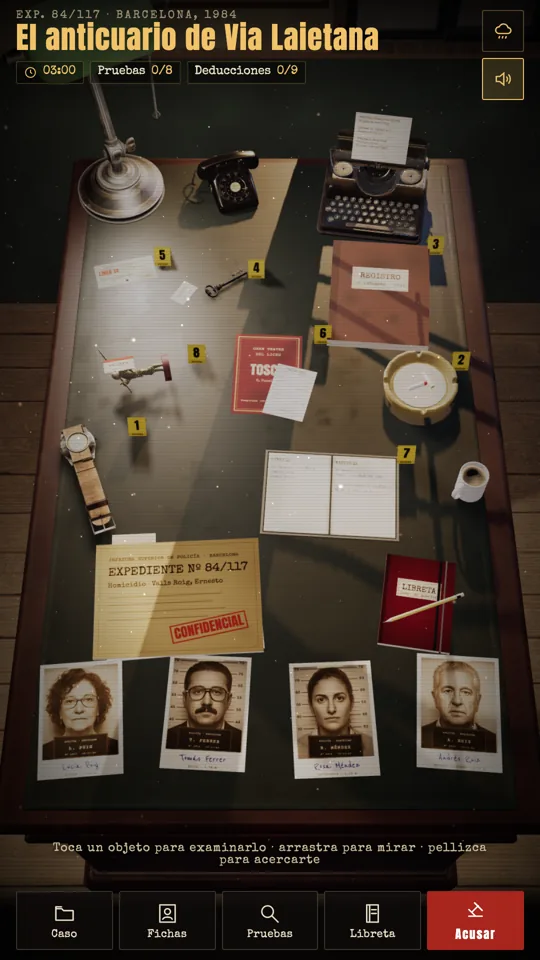
Una lámpara, un café frío y las pruebas de un crimen sobre la mesa. Examina cada objeto, lee las autopsias, interroga a los sospechosos y cruza las pistas en tu libreta. Cuando lo tengas claro, ve a la máquina de escribir y acusa. Si te equivocas, el culpable quedará libre.
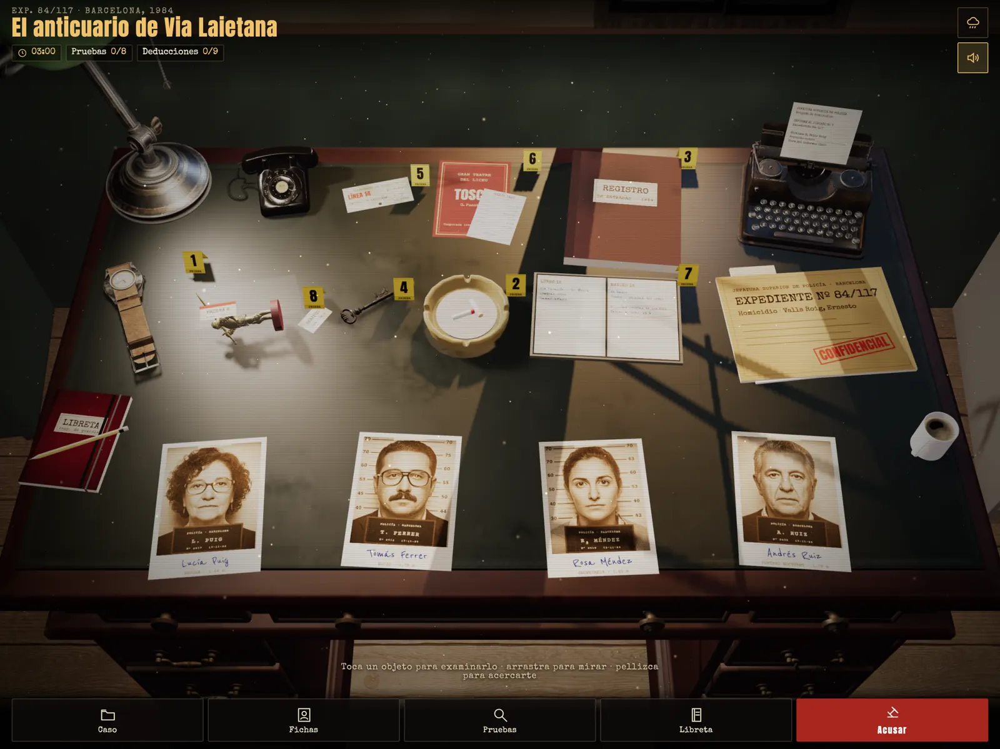
Un reloj parado a las 23:12, una colilla con carmín, una llave de servicio. Todo está sobre la mesa y todo puede ser una pista.
Cuando dos datos encajan, la libreta escribe una deducción. Confronta a los testigos con las pruebas: algunos mienten.
Señala al sospechoso y la prueba que lo demuestra. El juez solo te creerá si la prueba es la correcta.
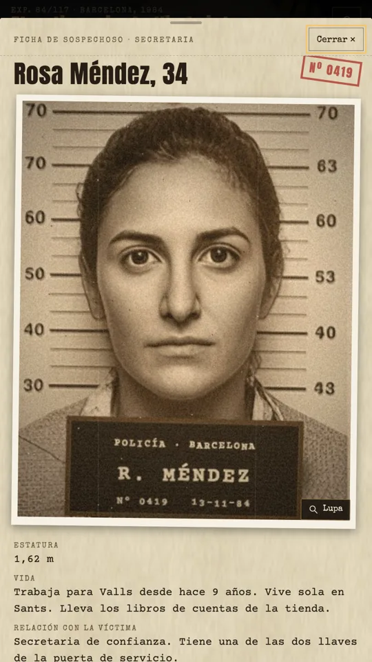
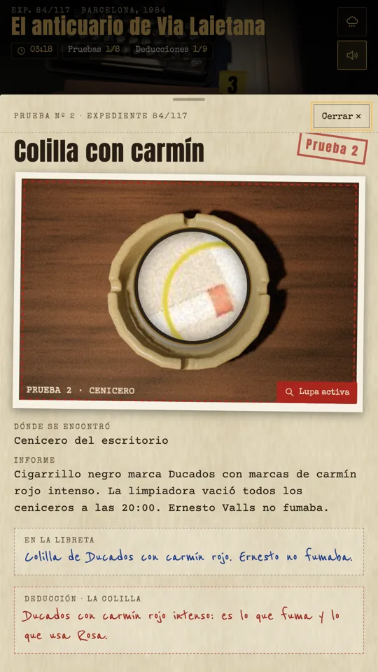
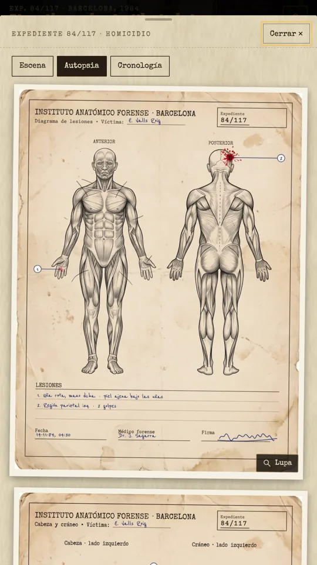
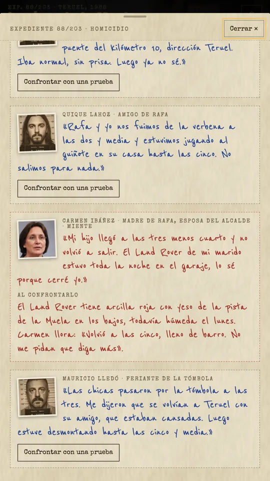
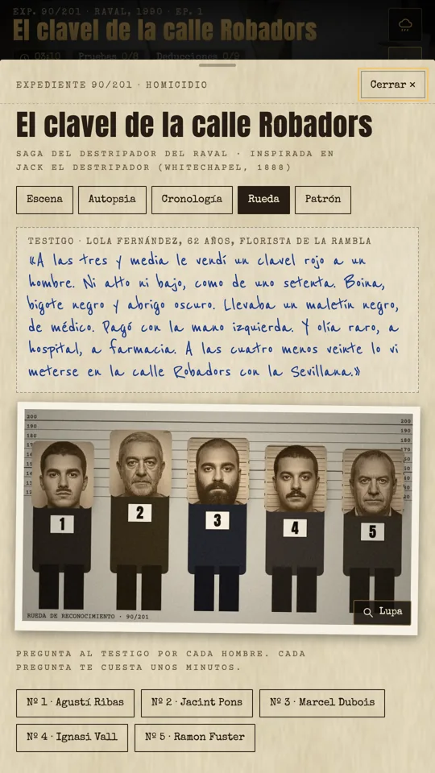
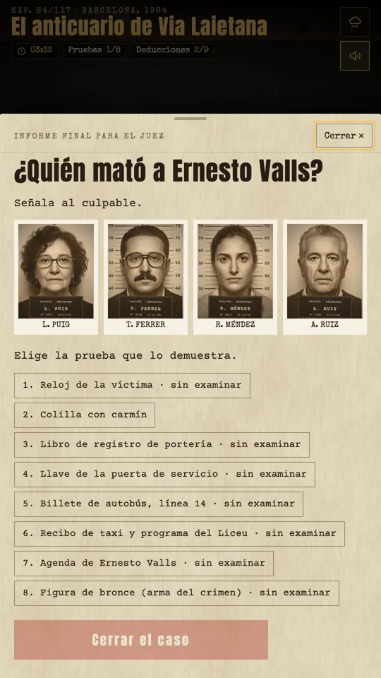
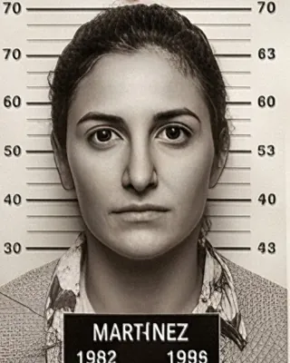
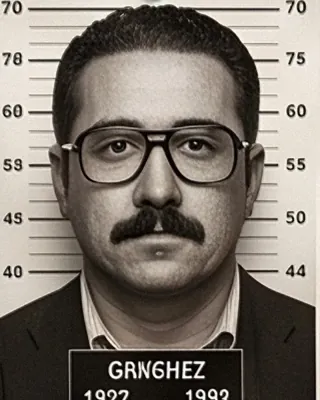
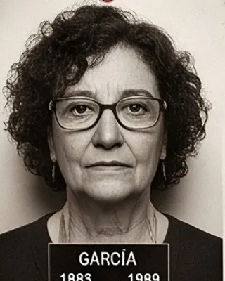
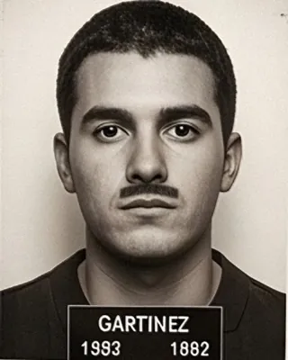
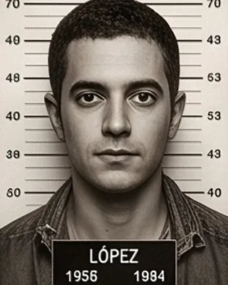
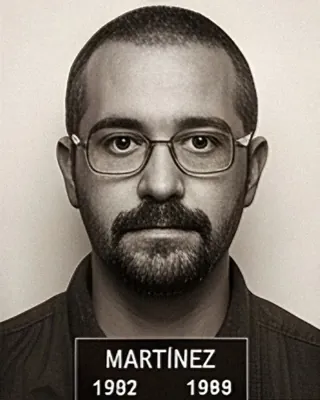